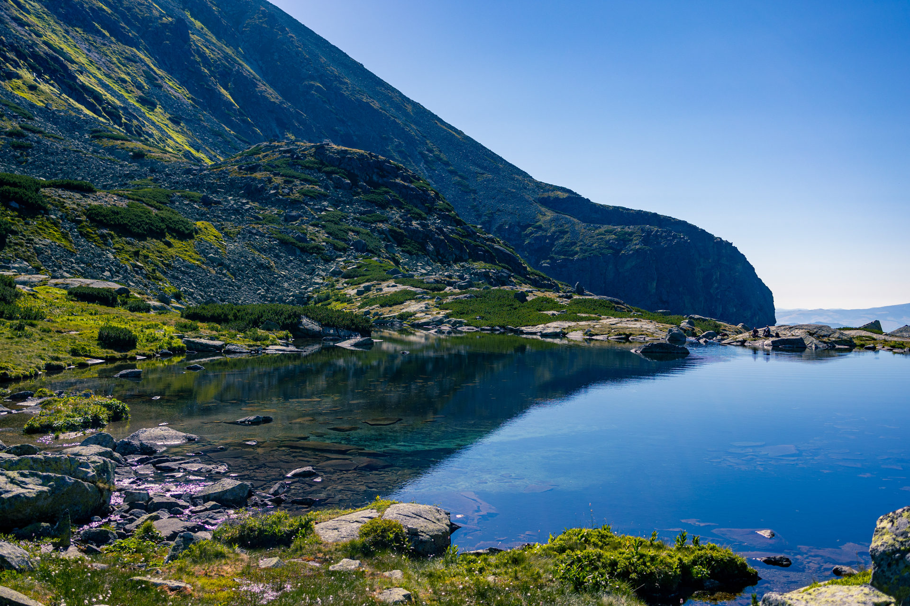
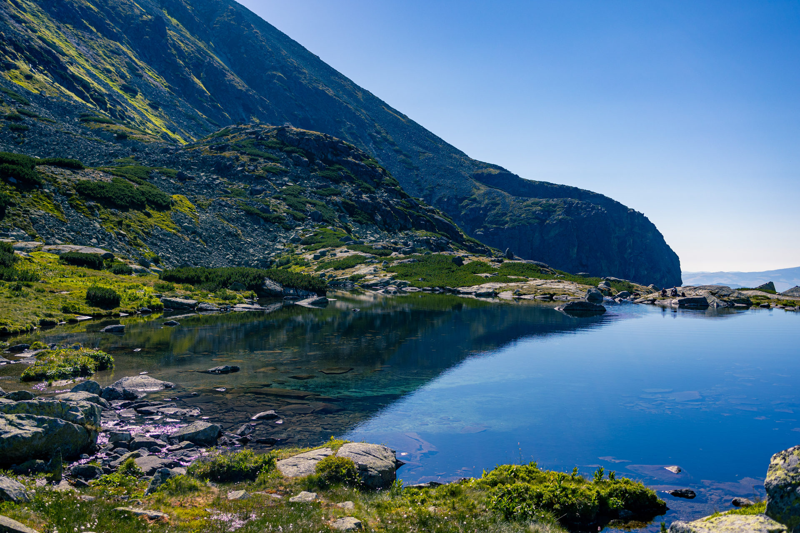

Hello, I am Dominykas and this is my profolio page that I created by my self writing code. I am a physics student and a photographer who on free time learns how to write code. This page goal is to show potential employers my programming skills and for future clients my photography works.
 People
People
I have been taking people photos for a long time, started when I got my first camera back in 2018. Through the years my styles changed a lot, and now I think I found the one so come and see for yourself. Concerts
This type of photography actually come into my life pretty recently. When I started studing and moved into Vilnius, got a few chances to try my skills shooting concerts, and it got me, I love shooting concerts.
 
Places

Places
This type of photography actually come into my life pretty recently. When I started studing and moved into Vilnius, got a few chances to try my skills shooting concerts, and it got me, I love shooting concerts.